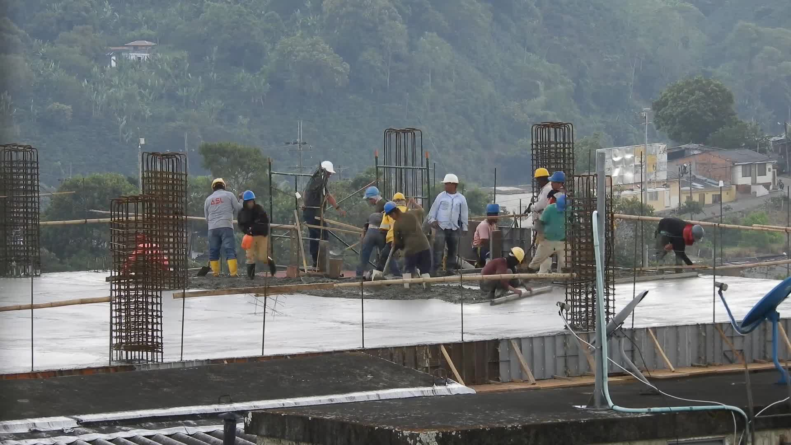
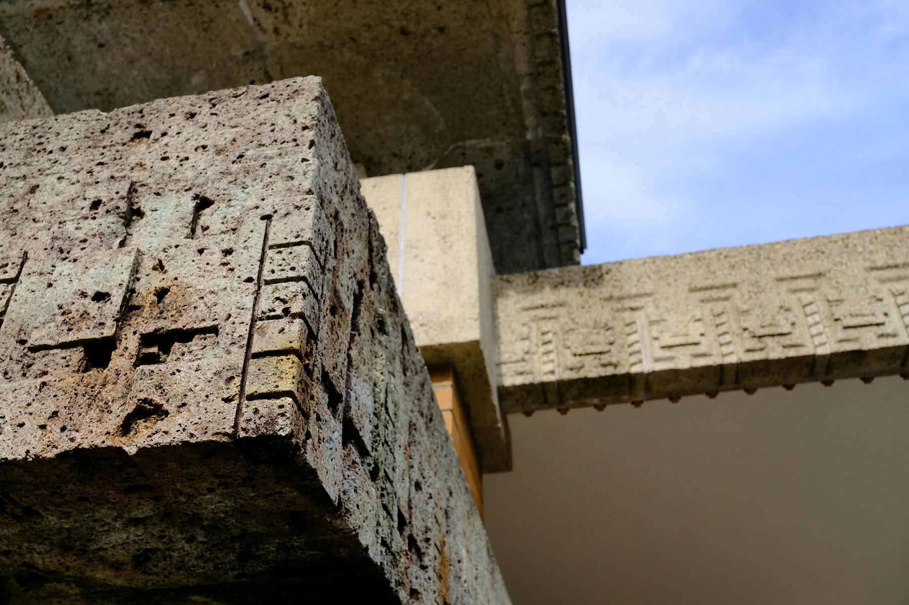

Protect what matters.
Your property is an investment. Talk through visible changes and understand what may need a closer look before making decisions.

NORTH WALES, PENNSYLVANIA
Concrete deserves a closer look.
Start with a specialist.
Every concrete project starts with understanding what’s beneath the surface.
Cracks, moisture, and worn surfaces tell a story. Bring your questions to Concrete Injection Specialist Inc. and discuss the next step for your property or project.
Speak with the team
Describe what you see. Discuss what comes next.
Where is the crack? Has it changed? Is there moisture nearby? These observations help give the team a useful starting point for a conversation about injection or repair.
Note where water appears and whether it follows rain or stays present. Have photographs and the location ready when you call to discuss your concrete concerns.
Describe any flaking, exposed reinforcement, or changes to the surface. Ask the team about the appropriate next step and whether your project is within their scope.
Your building has a job to do. A concrete concern deserves a clear conversation about the things that matter to you.
Your property is an investment. Talk through visible changes and understand what may need a closer look before making decisions.
Recurring water raises questions. Describe where and when it appears so the conversation starts with the right information.
Access, timing, and day-to-day use all matter. Share your priorities early to help establish a practical next step.
THINK BEYOND THE VISIBLE
You don’t need every answer before you call.
Start with the details you have.
Bring the location, visible condition, and any changes you’ve noticed. Photos can help explain the situation.
Share the property type, access considerations, and project priorities. Ask about scope and availability.
Discuss whether a site visit or further evaluation is appropriate, and what information the team needs from you.
A crack that’s caught your attention. Moisture that keeps coming back. A project you’re ready to discuss.
Start with a few details.
Prefer to talk? (215) 699-0600